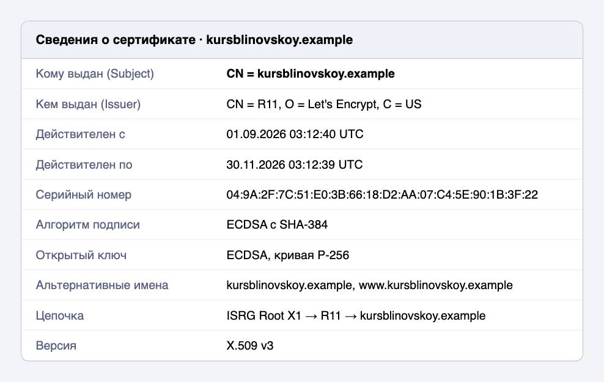
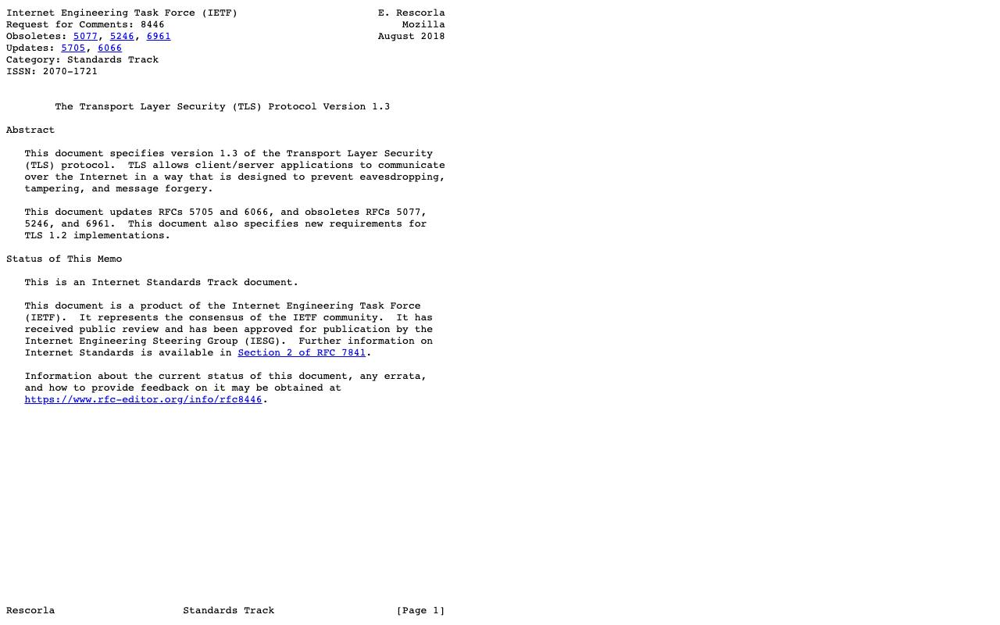

Справочник «Стандарты и сертификаты» · тема 3
Глава 13
Криптография
и сертификаты ключей
Шифрование, хеширование и электронная подпись описаны стандартами, и в России для них есть собственные алгоритмы. В главе разобраны российские криптографические ГОСТы, сертификат открытого ключа X.509, протокол TLS и токен JWT.
- Документы
- ГОСТ Р 34.10-2012 · ГОСТ Р 34.11-2012 · ГОСТ Р 34.12-2015 · X.509 · RFC 5280 · RFC 8446 · RFC 7519 · 63-ФЗ
- Уровень
- Средний
- Где встречается
- HTTPS, электронная подпись, вход в сервис по токену
- Зачем это знать
- Чтобы читать сертификат сайта и не путать его с сертификатом соответствия
§1Три задачи криптографии
Шифрование скрывает содержание данных от тех, у кого нет ключа. Хеш-функция вычисляет по данным короткое значение, которое меняется при любом изменении данных. Электронная подпись подтверждает, кто подписал данные и что они не изменены.
| Задача | Российский стандарт | Международный аналог |
|---|---|---|
| блочное шифрование | ГОСТ Р 34.12-2015: «Кузнечик», блок 128 бит, и «Магма», блок 64 бита | AES |
| режимы работы шифра | ГОСТ Р 34.13-2015 | режимы CBC, CTR, GCM |
| хеш-функция | ГОСТ Р 34.11-2012 «Стрибог», 256 или 512 бит | SHA-2, SHA-3 |
| электронная подпись | ГОСТ Р 34.10-2012 | ECDSA, RSA |
§2Где нужны российские алгоритмы
Российские алгоритмы обязательны там, где этого требует закон: в квалифицированной электронной подписи по закону 63-ФЗ и при обмене с государственными системами. Средства, которые их реализуют, проходят сертификацию ФСБ России.
Обычный сайт защищает соединение протоколом TLS с международными алгоритмами: их поддерживают все браузеры.
§3Сертификат открытого ключа
Сертификат открытого ключа — электронный документ, в котором удостоверяющий центр связывает открытый ключ с владельцем: доменным именем или организацией. Формат сертификата задаёт стандарт X.509, его применение в интернете — RFC 5280.

| Поле | Что сообщает |
|---|---|
| Кому выдан (Subject) | доменное имя, для которого действует сертификат |
| Кем выдан (Issuer) | удостоверяющий центр, подписавший сертификат |
| Срок действия | даты начала и окончания; после окончания браузер покажет предупреждение |
| Открытый ключ и алгоритм | ключ сайта и алгоритм подписи |
| Альтернативные имена | все доменные имена, на которые распространяется сертификат |
Браузер доверяет сертификату сайта, потому что он подписан промежуточным сертификатом, а тот — корневым. Корневые сертификаты заранее установлены в системе. Такая последовательность называется цепочкой доверия.
§4Протокол TLS
TLS шифрует соединение между браузером и сервером и проверяет сертификат сервера. Действующая версия 1.3 описана в RFC 8446.

§5Токен JWT
JWT — токен, которым сервис подтверждает права клиента. Формат описан в RFC 7519. Токен состоит из трёх частей через точку: заголовок, полезные данные и подпись. Первые две части — это JSON, закодированный в Base64URL.
eyJhbGciOiJIUzI1NiJ9 . eyJyb2xlIjoiYW5vbiJ9 . подпись
заголовок: {"alg":"HS256"}
полезные данные: {"role":"anon"}import base64, json
token = 'eyJhbGciOiJIUzI1NiJ9.eyJyb2xlIjoiYW5vbiJ9.signature'
header, payload, _ = token.split('.')
pad = lambda s: s + '=' * (-len(s) % 4)
print(json.loads(base64.urlsafe_b64decode(pad(payload))))
# {'role': 'anon'}Токены начинаются с eyJ, потому что так кодируются первые символы JSON-объекта. Полезные данные не зашифрованы: их прочтёт любой, кто получил токен. Подпись защищает токен только от изменения.
§6Частые ошибки
§7Проверьте себя
- Чем шифрование отличается от хеширования и от электронной подписи?
- Какие российские стандарты задают блочный шифр, хеш-функцию и электронную подпись?
- Какие поля сертификата X.509 показывают, для какого сайта и кем он выдан?
- Что такое цепочка доверия и почему браузер доверяет корневому сертификату?
- Из каких частей состоит JWT? Можно ли прочитать его полезные данные без ключа?
Р 34.12-2015 — шифрР 34.11-2012 — хешР 34.10-2012 — подписьсертификация ФСБX.509, RFC 5280Subject, Issuer, сроккорневой → промежуточный → сайтTLS 1.3 — RFC 8446JWT — RFC 7519eyJ — начало JSONданные JWT не зашифрованыСправочник «Стандарты и сертификаты» · глава 13Макаров Максим Николаевич